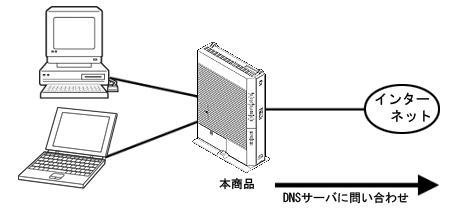

DNSサーバは、ホームページのURLやメールアドレスに使われているドメイン名 (ntt.co.jpなど)のIPアドレス(グローバルIPアドレス)情報を管理しているサーバです。DNSサーバを利用することで、IPアドレスを意識しなくてもURLやメールアドレスの指定だけでホームページを閲覧したりメールを送信できます。
DNS Proxyとは、LAN上の各パソコンからのDNSの問い合わせパケットを受け取ると、インターネット上の本来のDNSサーバにフォーワーディングして問い合わせ、IPアドレスを各パソコンに回答する機能です。LAN上のパソコンは、本商品がDNSサーバとして動作しているように見えます。 |
|  | |